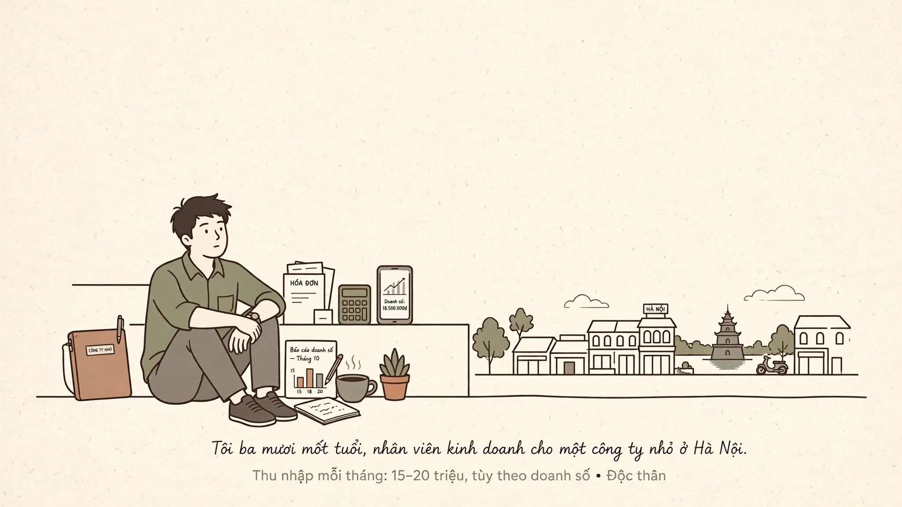
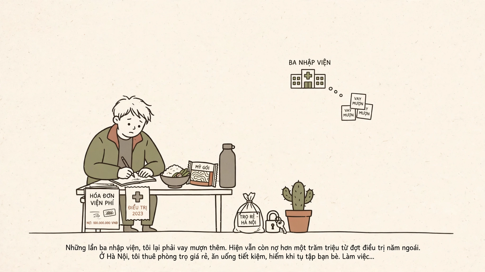
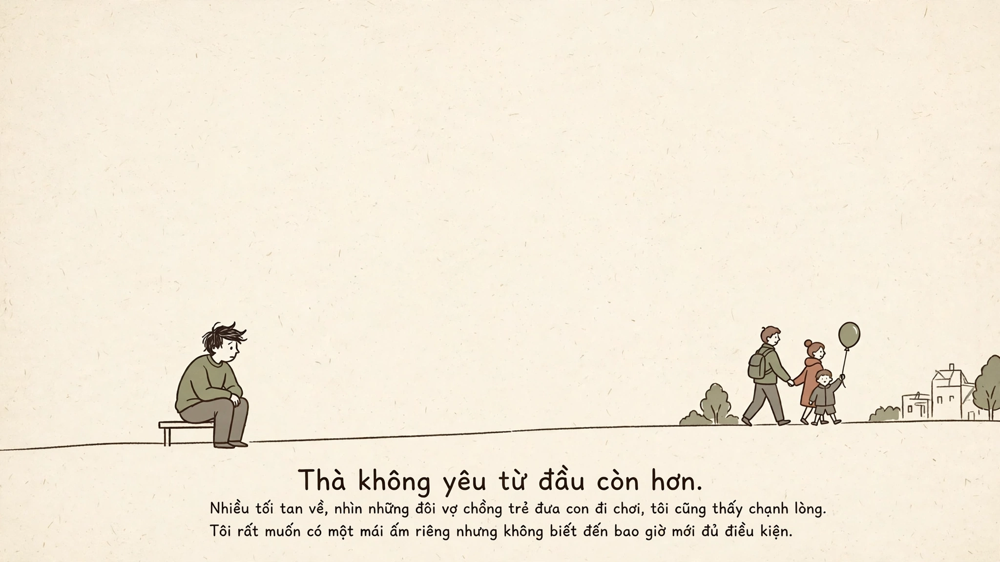

Nghèo nên tôi chẳng dám yêu ai

Tôi rất muốn có một mái ấm riêng nhưng không biết đến bao giờ mới đủ điều kiện.

Tôi ba mươi mốt tuổi, làm nhân viên kinh doanh cho một công ty nhỏ ở Hà Nội, thu nhập mỗi tháng dao động từ mười lăm đến hai mươi triệu tùy theo doanh số.
Với người độc thân, mức lương này nghe có vẻ ổn, nhưng hoàn cảnh gia đình khiến tôi gần như không còn dư tiền tiết kiệm.
Ba tôi bị tai biến cách đây ba năm, nay nằm liệt giường, mọi sinh hoạt đều cần người chăm sóc.
Mẹ đã quá sáu mươi, sức khỏe yếu, hay đau lưng mất ngủ nhưng vẫn phải gồng mình lo cho ba.
Tôi là con trai duy nhất, chị gái đã lấy chồng, kinh tế cũng vất vả nên không giúp được nhiều.
Mỗi tháng tôi gửi về nhà khoảng tám đến mười triệu để lo thuốc men, sinh hoạt.

Những lần ba nhập viện, tôi lại phải vay mượn thêm.
Hiện vẫn còn nợ hơn một trăm triệu từ đợt điều trị năm ngoái.
Ở Hà Nội, tôi thuê phòng trọ giá rẻ, ăn uống tiết kiệm, hiếm khi tụ tập bạn bè.
Làm việc gần tám năm, tài sản đáng giá nhất của tôi chỉ là chiếc xe máy.
Nhà ở quê cũng xuống cấp, cần tu sửa gấp.
Đất của ba mẹ ở quê rộng nhưng giá đất thấp, mấy năm trước ba mẹ phải bán bớt đất để giúp tôi trả nợ thua lỗ chứng khoán.

Tôi từng yêu một cô gái hơn hai năm.
Khi nghe tôi kể về hoàn cảnh, em không chê trách, thậm chí nhiều lần muốn về quê thăm ba mẹ.
Nhưng sau chuyến về thăm nhà, em thay đổi dần và chia tay tôi, lý do gia đình em không đồng ý.
Từ đó, tôi gần như không dám tìm hiểu ai nữa.
Có người giới thiệu, tôi đều từ chối.
Tôi sợ khi biết hoàn cảnh, người ta sẽ e ngại rồi lại chia tay, lại đau khổ.

Thà không yêu từ đầu còn hơn.
Nhiều tối tan về, nhìn những đôi vợ chồng trẻ đưa con đi chơi, tôi cũng thấy chạnh lòng.
Tôi rất muốn có một mái ấm riêng nhưng không biết đến bao giờ mới đủ điều kiện.
Ba mẹ ngày càng già yếu, tôi cũng đã quá ba mươi.
Với hoàn cảnh như vậy, liệu tôi có nên nghĩ đến chuyện yêu đương, kết hôn, hay chấp nhận sống một mình để tập trung chăm sóc ba mẹ và công việc? Mong mọi người cho tôi lời khuyên.

Cảm ơn bạn đã lắng nghe.
Nguồn: Bài gốc